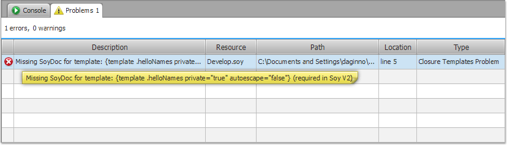

Closure FX Builder provides efficient tools to manage errors and
warnings of the Compiler and debug your code smoothly.
The
builder is integrated with the most common JavaScript editors and
IDEs, so you do not need to find issued code problems by hands.
Using Problems View
As you work with the Compiler, various code problems (errors or
warnings) may be automatically logged in the Problems view. For
example, when you have a Template source file that misses the
SoyDoc comment, those will be logged in the Problems view.
Go to the Console tab of the
Templates page. Choose Problems view.

By default the Problems view will
show your problems in the order they appear. You can also sort
them by severity, path, resource, line, message or not at all.
Click the header of the related column to sort it.
The first column of the Problems view displays an icon
that denotes the type of line item, the category and the
description.
Using Editors and IDEs
When you double-click the item for a problem, error, or warning,
the editor for the associated resource automatically opens to the
relevant line of code. Notice that the editor should be
configured, otherwise no action will be performed.
Read
Integration with
Editors and IDEs to add your favorite editor.